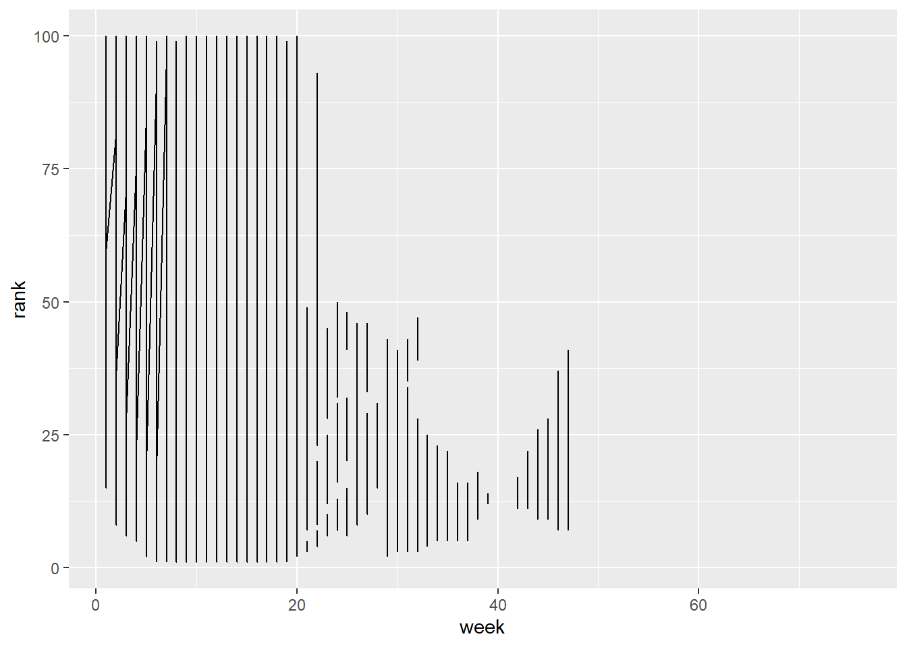

library(tidyverse)── Attaching core tidyverse packages ──────────────────────── tidyverse 2.0.0 ──
✔ dplyr 1.1.2 ✔ readr 2.1.4
✔ forcats 1.0.0 ✔ stringr 1.5.0
✔ ggplot2 3.4.3 ✔ tibble 3.2.1
✔ lubridate 1.9.2 ✔ tidyr 1.3.0
✔ purrr 1.0.2
── Conflicts ────────────────────────────────────────── tidyverse_conflicts() ──
✖ dplyr::filter() masks stats::filter()
✖ dplyr::lag() masks stats::lag()
ℹ Use the conflicted package (<http://conflicted.r-lib.org/>) to force all conflicts to become errorsbillboard# A tibble: 317 × 79
artist track date.entered wk1 wk2 wk3 wk4 wk5 wk6 wk7 wk8
<chr> <chr> <date> <dbl> <dbl> <dbl> <dbl> <dbl> <dbl> <dbl> <dbl>
1 2 Pac Baby… 2000-02-26 87 82 72 77 87 94 99 NA
2 2Ge+her The … 2000-09-02 91 87 92 NA NA NA NA NA
3 3 Doors D… Kryp… 2000-04-08 81 70 68 67 66 57 54 53
4 3 Doors D… Loser 2000-10-21 76 76 72 69 67 65 55 59
5 504 Boyz Wobb… 2000-04-15 57 34 25 17 17 31 36 49
6 98^0 Give… 2000-08-19 51 39 34 26 26 19 2 2
7 A*Teens Danc… 2000-07-08 97 97 96 95 100 NA NA NA
8 Aaliyah I Do… 2000-01-29 84 62 51 41 38 35 35 38
9 Aaliyah Try … 2000-03-18 59 53 38 28 21 18 16 14
10 Adams, Yo… Open… 2000-08-26 76 76 74 69 68 67 61 58
# ℹ 307 more rows
# ℹ 68 more variables: wk9 <dbl>, wk10 <dbl>, wk11 <dbl>, wk12 <dbl>,
# wk13 <dbl>, wk14 <dbl>, wk15 <dbl>, wk16 <dbl>, wk17 <dbl>, wk18 <dbl>,
# wk19 <dbl>, wk20 <dbl>, wk21 <dbl>, wk22 <dbl>, wk23 <dbl>, wk24 <dbl>,
# wk25 <dbl>, wk26 <dbl>, wk27 <dbl>, wk28 <dbl>, wk29 <dbl>, wk30 <dbl>,
# wk31 <dbl>, wk32 <dbl>, wk33 <dbl>, wk34 <dbl>, wk35 <dbl>, wk36 <dbl>,
# wk37 <dbl>, wk38 <dbl>, wk39 <dbl>, wk40 <dbl>, wk41 <dbl>, wk42 <dbl>, …billboard %>%
pivot_longer(cols = starts_with("wk"),
names_to = "week",
values_to = "rank",
values_drop_na = FALSE) %>%
mutate(week = parse_number(week)) %>%
ggplot(aes(x = week, y = rank, group = 1)) +
geom_line()Warning: Removed 3741 rows containing missing values (`geom_line()`).